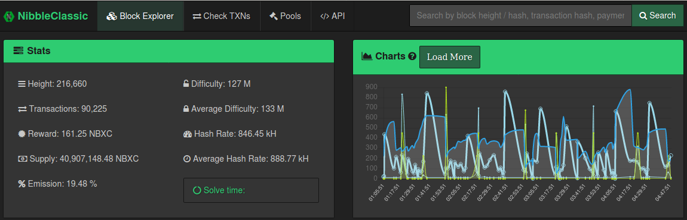

<template>

    <section class="section" id="section-about">
        <div class="section-contents">
            <div class="div-centered" id="faucet-list">
                <h3 align="center">The official Block explorer for NibbleClassic</h3>
                <h6 scope="col">
                    <center></img></center>
                    <body><br>
                        <center><button onclick="myFunction5()">Launch the explorer</button></center>
                        <script>
                            function myFunction5() {
				require('electron').shell.openExternal('https://nibbler.hopto.org/');
                            }
                        </script>

                    </body>

            </div>
        </div>
    </section>
</template>

